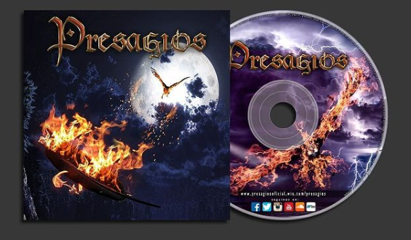
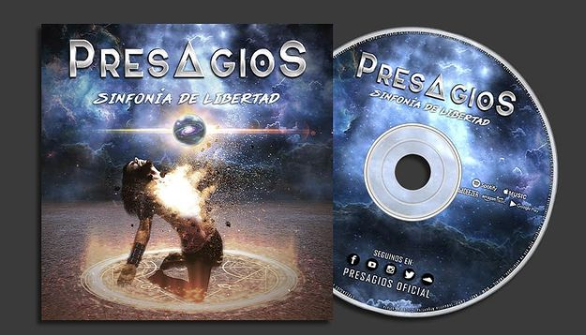

P R E S ∆ G I O S
Home
La Banda
Discos
Galeria
Contacto
Presagios (2016)
Temas
Presagios
Detras del Sol
Realidad
Tempestad
Decisiones
Hasta el final
Limbo
Despertar
Mi Salvación
Genesis
Música

Sinfonía de Libertad (2019)
Temas
Rebelion
Almas Prohibidas
Una copa mas
Utopía
Huellas de un
sendero disonante
Letargo
Luce mi estandarte
A contra Luz
Dentro de ti
Demencia: Big Bang
